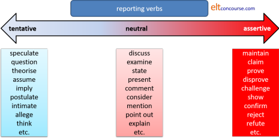

Reporting verbs in EAP
This guide is not to do with reported or indirect speech and will
not cover the simpler reporting verbs such as say, tell,
exclaim, ask, enquire etc. For a guide to those matters
click here
for the guide to indirect speech in general English.
What follows assumes that the rules for reporting direct speech are familiar.
The following is most relevant to formal academic writing although
the concepts are generalisable. It is, therefore, of most
interest to people teaching EAP (English for Academic Purposes).
 |
Why is this important? |
Consider this:
Even the most
original academic paper integrates facts, ideas, concepts, and
theories from other sources by means of quotations, paraphrases,
summaries, and brief references.
(Campbell 1990, in Jordan, 1997:171)
It is unlikely, but not impossible, that learners of English for Academic Purposes will be producing the most original academic paper so the ability to insert summaries, paraphrases and citation appropriately, using the right reporting verb, is a key writing skill. Not least, of course, to avoid any whiff of plagiarism. Understanding the implications of reporting verbs is also a key reading skill to identify slant and angle.
Reporting verbs can be classified and presented in a number of ways and we can also, as we shall see, combine elements of the analysis to make the area accessible to learners.
Classifying reporting verbs: attitude |
Reporting verbs are subtle but powerful signals of the writer's
attitude to the message being sent by a paraphrase or citation.
Compare, for example:
Guru states that ...
Guru presumes that ...
Guru claims that ...
Guru suggests that ...
Guru mentions that ...
Guru hypothesises that ...
One way to classify such verbs is to arrange them on a cline from tentative, through neutral to assertive. Something like this:

There are obvious problems with this, not least that opinions may
differ concerning the exact connotation each verb carries.
Such a classification does, however, have some classroom utility
because it alerts learners to the connotations that the verbs carry
and may help them avoid inappropriate choices.
Classifying reporting verbs: function |
Reporting verbs are used for a range of communicative functions. Presenting them from this standpoint, we can get something like:
This sort of presentation and analysis sits well with a communicative approach because it focuses clearly on the communicative value of the verbs.
However, one obvious problem is that some verbs can be synonyms
and some can perform multiple functions. There is not a great
deal of difference in meaning between, e.g.:
Guru proposes that we ...
and
Guru suggests that we ...
However, suggest is also polysemous in a way that
propose is not so we can also have:
The data suggest that ...
but not
*The data propose that ...
Another obvious issue is that the diagram ignores the strength
of the reporting verbs and may allow learners to believe that all
the verbs in each category carry the same connotations. As we
saw above, that is not the case.
 |
Classifying reporting verbs: form |
The final way to classify these verbs in this guide is by
grammatical and lexical form. We need to look at concepts of
collocation and colligation here, especially the latter. This
might result in this kind of analysis:

but there are problems with that, too, some colligational, some collocational:
- Transitivity
- Some verbs in the lists are both transitive and
intransitive. We can have
Guru concedes the point that ...
Guru concedes that ...
Guru questions the conclusion
Guru questions whether ...
Guru proposes a solution
Guru proposes that ... - Some verbs are only intransitive. We can have:
Guru observes that ...
but not
*Guru observes the conclusion that ...
or
*Guru theorises a solution - Some verbs are only transitive. We can have:
Guru recommends a solution
and
Guru recommends that ...
but not
*Guru discounts that ...
or
*Guru discusses that ...
- Some verbs in the lists are both transitive and
intransitive. We can have
- Appropriacy of subject:
Some of these verbs will collocate with inanimate subjects, some with animate only and some with both.- Animate subjects can be used for most of them but some
can also take inanimate subjects. We can have, e.g.,
The study shows ...
Guru shows ...
The evidence indicates ...
Guru indicates ...
etc. - Some may only have animate subjects. We can have:
Guru hypothesises ...
Guru maintains ...
but not
*The evidence comments ...
*The data say ...
*The evidence states ...
or
*The facts allege ... - Some are open to metaphorical use,
assigning an action to an inanimate subject normally
reserved for people (pathetic
fallacy):
The study argues ...
The facts imply ...
The findings argue for ...
and some are not:
*The evidence describes ...
*The findings believe ...
- Animate subjects can be used for most of them but some
can also take inanimate subjects. We can have, e.g.,
- Omitting that
The theoretical distinction here is between what are called bridge verbs and non-bridge verbs. Many simple reporting verbs such as say, tell, think, know, write, claim and hear are bridge verbs and it is perfectly in order to omit the word that when they are followed by a clause so we allow both:
He said that the results are unsatisfactory
Guru thinks that the solution is to ...
She claims that the analysis is flawed
etc. and:
He said the results are unsatisfactory
Guru thinks the solution is to ...
She claims the analysis is flawed
Many find (that) the sentences without that are more stylistically acceptable.
However, in academic writing simple verbs like these are often avoided for the sake of style or precision as we have seen above and with the less frequently used verbs, sometimes called non-bridge verbs, omitting that often results in some clumsiness. All of the following, for example:
Guru confirms the results are reliable
He acknowledge the experiment was flawed
The findings indicate there is a need for ...
She explains findings are provisional
are better expressed with that retained as in:
Guru confirms that the results are reliable
He acknowledge that the experiment was flawed
The findings indicate that there is a need for ...
She explains that findings are provisional
 |
Combining the analyses |
We can weave aspects of all three analyses together to produce quite sophisticated analysis. For example, if we combine attitude with function we can produce something like:
and we can do similar things with many of the other functions.
It is also possible to combine functional and formal analyses:

It is even possible to go one step further and combine all three analyses but, at that stage, the data start to get impenetrable.
 |
Tense, aspect and voice |
Reporting verbs are frequently used in the present simple so that is not difficult to teach. Perversely, some lists of reporting verbs put all of them in the present simple 3rd person which is misleading at best. Two other tenses are also frequently used and multiple authorship is common. Here are examples of all three:
- Present simple
This is the most frequent form:
Guru notes that ...
The data imply ...
In that paper, Guru and Mentor propose ... - Past simple
This is frequently used for sources which are older and have become seminal authorities in some way. For example:
Guru (1949) identified ... - Present perfect
This is used a) when the writer needs to emphasise the present relevance of a source or b) when the sources are varied and (sometimes) not individually identified. It is often used in the passive voice but need not be. For example:
It has been noted (Guru, 2016) that ...
Guru (2010) has discovered that ...
Guru and Mentor (2000) investigated the structure of these complex substances and have shown that they are ...
It has often been asserted that ... - Passive clauses and the dummy it
There are time when the writer may wish to disguise the source of a statement, when the statement needs no reference or when the source is unknown or so ubiquitous in the field that citing individual authors would be too cumbersome.
In these cases, a passive construction (usually in the present simple or perfect) and a dummy it come to the rescue as in, e.g.:
It has been established that ...
It is reckoned that ...
It has often been noted that ...
and so on.
Sometimes, the source is included in such constructions as in, e.g.:
It has been shown (Guru, 1998, Mentor, 1999 and others) that ...
In the last case, the by-phrase conventionally used to indicate the agent is unnecessary because it is implied by the citations in brackets.
The dummy it is often avoided, too, especially when the patient of a passive clause is inanimate so we may encounter, for example:
The results have been disputed in the literature
The search for a solution has, until now, been abandoned as ...
Many reasons are suggested, including, for example, ...
The law has been criticised as being ...
This proposal has been rejected as ...
and so on.
(There are two short exercises in the learners' section of this site on using passive reporting verbs. Click here to open the index in a new tab.)
 |
Teaching and learning issues |
Here's an incomplete list of 160 of the verbs commonly used to report the work of others in academic writing. It is unclassified by any of the three analyses considered above but a classified version is available from the next link.
|
accept acknowledge add admit advise advocate affirm agree alert allege allow analyse announce appraise argue articulate assert assess assume assure |
attack aver believe blame cast doubt on challenge characterise claim clarify classify comment concede conclude concur confirm congratulate consider contend contradict contribute |
counter criticise critique debate decide declare defend define demonstrate deny depict describe determine develop disagree disapprove discard disclaim discount discover |
discuss dismiss disprove disregard doubt emphasise encourage endorse estimate evaluate examine explain explore express fault feel find forbid forget forgive |
guarantee guess highlight hold hope hypothesise identify illustrate imagine imply indicate infer inform inquire insist interpret intimate investigate justify know |
list maintain mention note object (to) observe oppose outline persuade point out portray posit postulate praise predict present profess promise propose protest |
prove provoke put forward query question realise reason rebuff recognise recommend refer refute reject remark remind report restate reveal say scrutinise |
show speculate state stress study substantiate suggest support suppose suspect take into consideration take issue with tell theorise think throw light on underline understand urge |
This list is also available as a PDF document for reference.
Clearly, presenting learners with a list like this is not going to be a very productive approach. Somehow we have to help our learners eat the elephant so a piecemeal approach is the only practical way forward.
Before you can begin, you need to make a selection of the reporting verbs which will form the target of a teaching sequence. This site can't do that for you because there are some variables to consider first:
- Level:
- At lower levels, it may be adequate to focus on a short
list of frequently used neutral verbs. This might
include, e.g.:
state, mention, discuss, comment, show, suggest etc. - At higher levels, your learners need to start learning
about the attitudes that verb-use implies so the list can
start to extend to verbs like:
question, intimate, assert, demonstrate, discount, hypothesise etc. - Later yet, learners need to be alert to degrees of
assertion and argumentation so the list gets extended again
to include, e.g.:
maintain, portray, take issue with, profess, presume and so on.
- At lower levels, it may be adequate to focus on a short
list of frequently used neutral verbs. This might
include, e.g.:
- Register:
- Within the natural sciences, certain reporting verbs are
more frequently found. Often, they have inanimate
subjects such as data, experimental investigation,
observations and so on. Verbs commonly used with
inanimate subjects might include:
reveal, show, suggest, demonstrate, explain, confirm, (dis)prove etc.
so these become the targets for learners in those disciplines - within the social sciences, more tentative verbs are
frequent and they come with animate subjects so verbs like:
propose, suggest, imply, interpret, posit, postulate etc.
are more useful targets.
- Within the natural sciences, certain reporting verbs are
more frequently found. Often, they have inanimate
subjects such as data, experimental investigation,
observations and so on. Verbs commonly used with
inanimate subjects might include:
- Colligation:
It makes sense to introduce and practise those verbs which share colligational characteristics so, for example, one could focus on those verbs which are normally followed by that-clauses and separately on those which are followed by noun phrases.
Focusing on those which are prepositional is also an option.
Transitivity is something to bear in mind, too.
See the diagram above for examples of all of these. - Function:
A logical approach is to decide first what the author of a text is actually doing with the language and then to select a reporting verb from a list categorised by function.
The list which follows will have to be edited in accordance with the learners' level of knowledge and needs but, once they have identified what the author of a citation is actually trying to achieve, there is need only for a focus on one set of verbs.
Helpfully, the verbs are classified on this site in that way and you can get the list in a PDF format to select from by clicking here.
The list looks like this:ADDING ADVISING AGREEING EMPHASISING ANALYSING EXPLAINING add
augment
complement
contribute
develop
refer
reinforce
restate
strengthen
substantiate
support
take into consideration
verifyadvise
advocate
caution
counsel
encourage
persuade
propose
recommend
suggest
urge
warnaccept
acknowledge
accede
admit
affirm
agree
allow
concede
concur
confirm
endorse
recognisealert
congratulate
emphasise
forbid
guarantee
highlight
point out
promise
remind
stress
underlineappraise
assess
consider
criticise
critique
defend
dismiss
disregard
estimate
evaluate
forgive
ignore
justify
praise
proveclarify
depict
describe
designate
express
explain
explicate
illustrate
interpret
portray
reveal
show
term
throw light onDISAGREEING BELIEVING DISCUSSING PRESENTING QUESTIONING SUGGESTING attack
challenge
contend
contradict
counter
deny
disagree
disapprove
discard
disclaim
discount
disprove
forget
object (to)
oppose
protest
rebuff
refute
reject
take issue withargue
assert
assume
aver
believe
claim
consider
decide
declare
feel
hold
infer
insist
maintain
profess
profess
realise
say
think
understandanalyse
argue
characterise
classify
debate
depict
describe
discuss
examine
explore
investigate
observe
outline
note
reason
remark
scrutiniseannounce
articulate
assure
comment
conclude
define
demonstrate
determine
discover
express
find
identify
inform
list
mention
present
put forward
report
state
study
tellblame
cast doubt on
challenge
contest
dispute
distrust
doubt
fault
have reservations
have doubts
inquire
point out
query
questionallege
conjecture
deduce
guess
hope
hypothesise
imagine
imply
indicate
intimate
posit
postulate
predict
provoke
speculate
suggest
suppose
surmise
suspect
theorise
 |
Approach |
You can approach the verbs from any of the three analyses above by considering attitude, function and form separately. A combined approach is often productive providing the number of target verbs is limited and carefully selected.
For example:
- Start with a shortlist of verbs which function to state what an author believes (say, hold, assert, believe, claim, declare, maintain etc.) and introduce them in context to show the colligations (see above for that). At lower levels, some focus on tense, aspect and voice is appropriate at this stage.
- Move on to presenting them on a cline from tentative, through neutral to assertive (see above).
- Then, once the function, form and meaning are clear,
learners can proceed to practising them. A simple way to
do that is to present a text which only uses a simple verb like
say and get learners to replace the verb with something
more appropriate. It could look something like this:
Jones (1964:20) says that ... and says it is important to ... but Smith (1990:85) says that this is not true and he says work by Robinson (1990) says that ...
More recently, Smith now says that what the study said was not fully correct. He now says that what Jones said is important.
could become something like:
Jones (1964:20) asserts that ... and emphasises that it is important to ... but Smith (1990:85) avers that this is not true and he points out that work by Robinson (1990) reveals that ...
More recently, Smith now concedes that what the study showed was not fully correct. He now allows that what Jones noted is important. - Finally, the learners can move on to writing or improving their own texts using the limited range you have introduced.
- The procedure can be duplicated with another target function and set of verbs until the learners are able to deploy a wide range of reporting verbs accurately, with attitudinal awareness and for functions they can clearly identify.
| Related guides | |
| reported or indirect speech | the general guide to the area |
| verbal processes | for a general guide to what verbs do |
| verb types and clause structures | for a guide to understanding verbs and their structures |
| EAP index | for links to other guides in the area |
Reference:
Campbell, in Jordan, RR, 1997, English for Academic Purposes,
Cambridge: Cambridge University Press